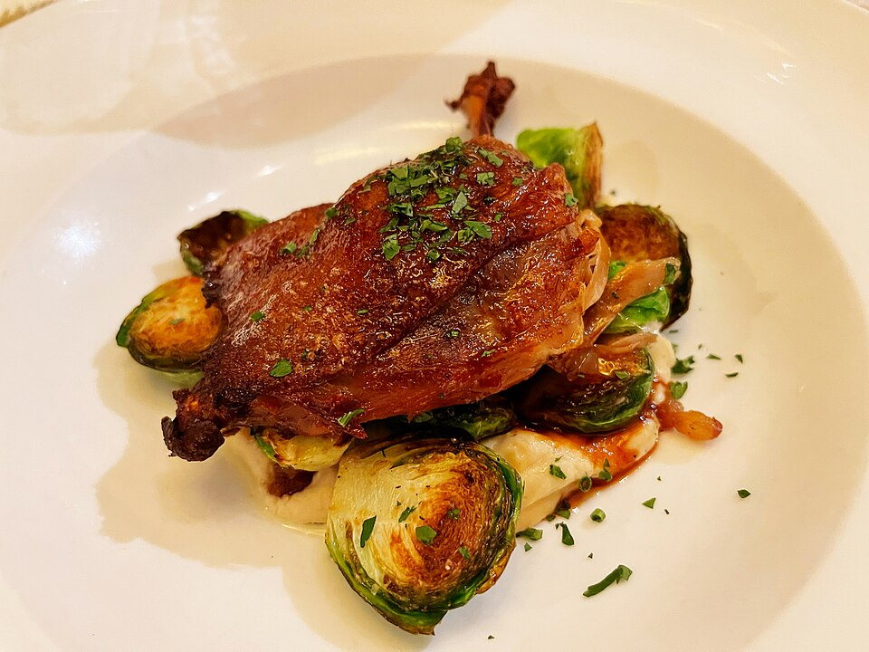Duck ConfitMissvainDuck confit - the girl and the fig - 2021-11-10 - Sarah Stierch.jpgSource / 原图出处 · CC BY 4.0
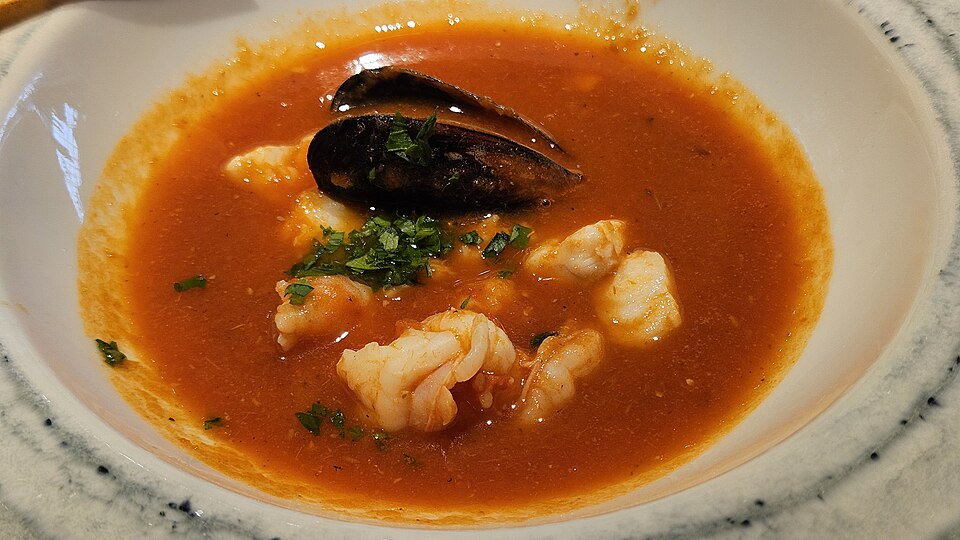BouillabaisseSergey A. Demidov20250903 Bouillabaisse in Khimki (90108).jpgSource / 原图出处 · CC BY 4.0
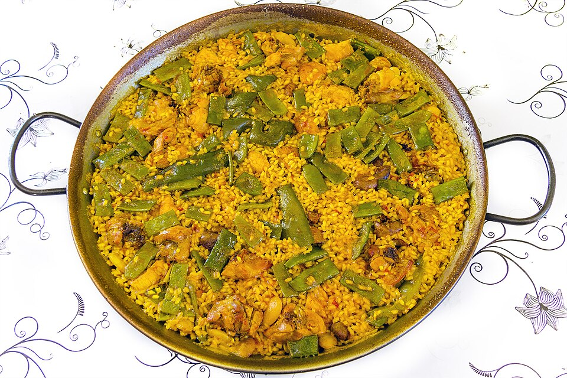Paella ValencianaJan Harenburg01 Paella Valenciana original.jpgSource / 原图出处 · CC BY-SA 4.0
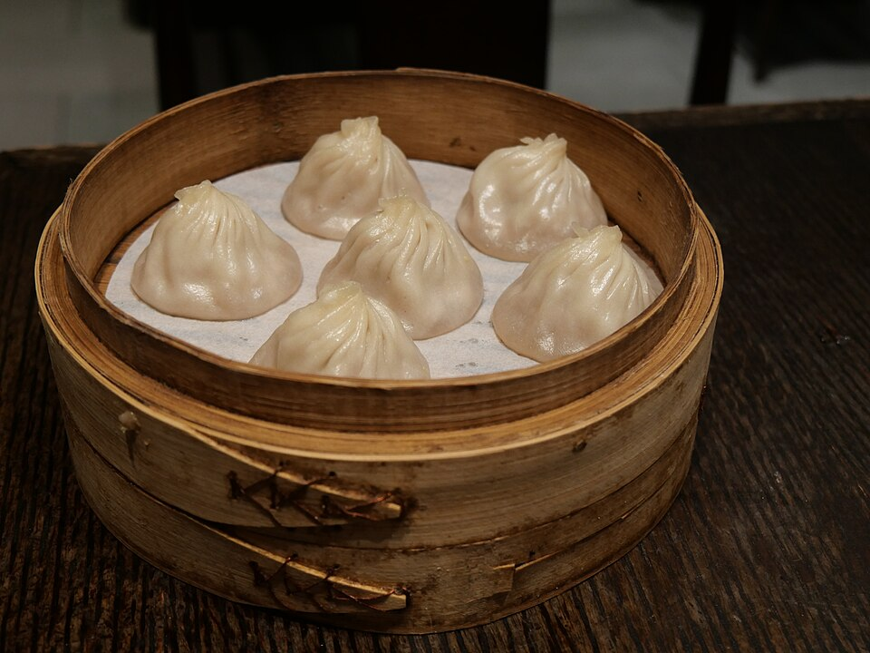XiaolongbaoPeachyeung316A Xiaolongbao from The Modern Shanghai.jpgSource / 原图出处 · CC BY-SA 4.0
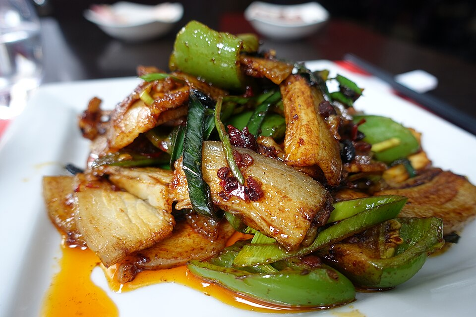Twice Cooked PorkGuilhem Vellut from Paris, FranceTwice cooked pork, Jia Yan, 5 rue Humblot, Paris 003.jpgSource / 原图出处 · CC BY 2.0
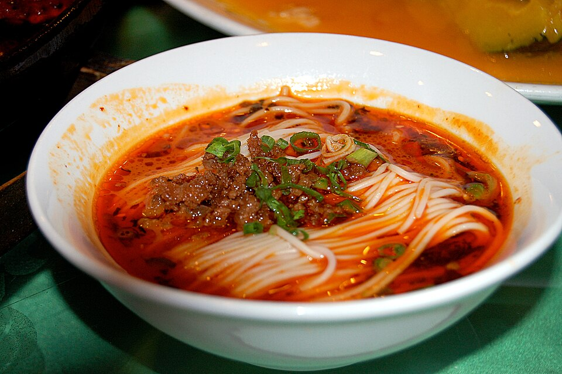Dan Dan NoodlesSteven G. JohnsonDan-dan noodles, Shanghai.jpgSource / 原图出处 · CC BY-SA 3.0
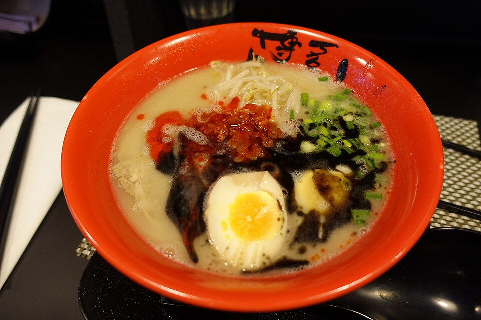Tonkotsu RamenGuilhem Vellut from Paris, FranceTonkotsu Ramen Special, Hakata Choten, Paris 001.jpgSource / 原图出处 · CC BY 2.0
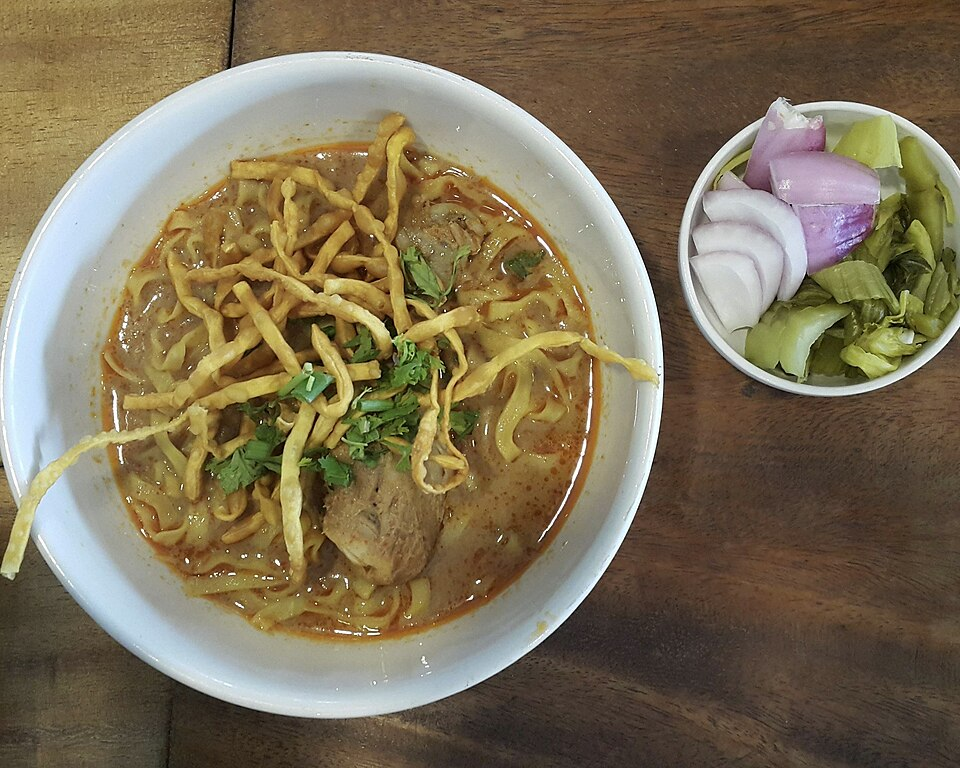Khao SoiChainwit.Khao Soi Northern Thai food ข้าวซอย ผักดอง.jpgSource / 原图出处 · CC BY-SA 4.0
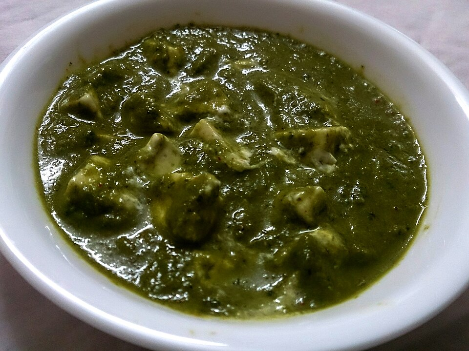Palak PaneerDreamyFlutura11Palak Paneer (Cottage cheese in spinach gravy).jpgSource / 原图出处 · CC BY-SA 4.0
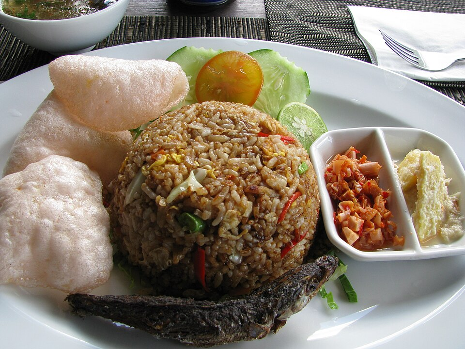Nasi Gorengshankar s. from Dubai, united arab emiratesNasi Goreng Kampung (11967588375).jpgSource / 原图出处 · CC BY 2.0
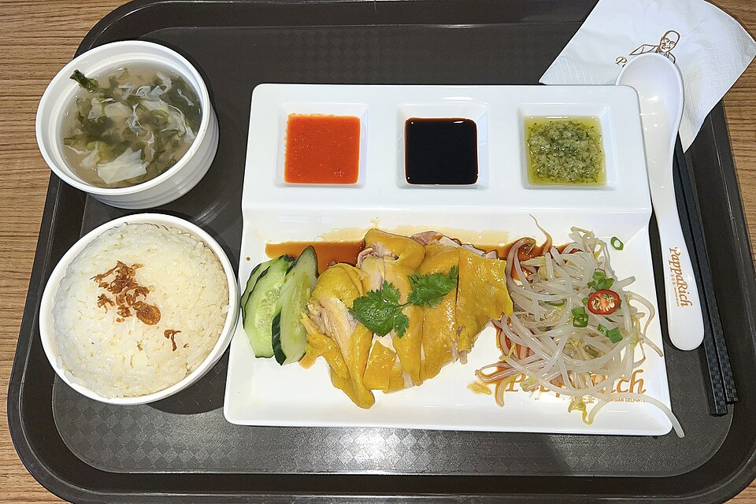Hainanese Chicken RiceN509FZHainan Chicken Rice at Pappa Rich Malaysian Delights, GR Mall Beijing (20230716104217).jpgSource / 原图出处 · CC BY-SA 4.0
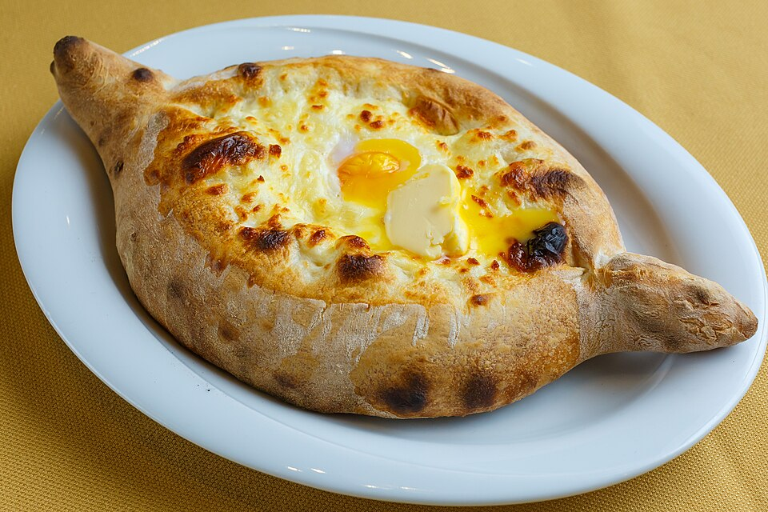Adjarian KhachapuriEugene KrasnaokKhachapuri Adjaruli with egg and butter 2016.jpgSource / 原图出处 · CC BY 4.0
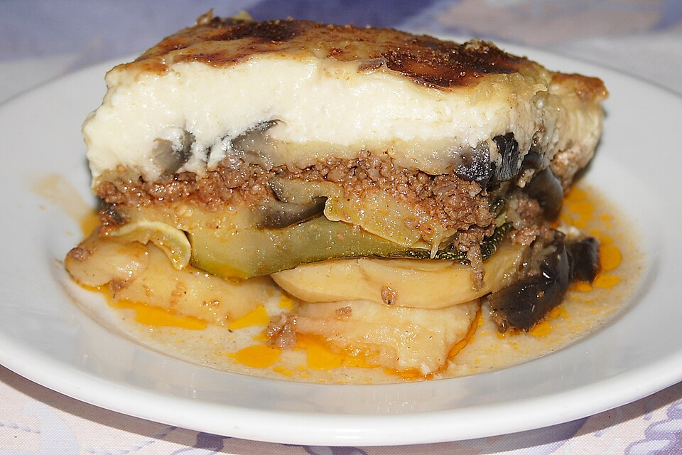MoussakaRobert Kindermann aka RobertKMussakasMeMelitsanesKePatates01.JPGSource / 原图出处 · CC BY-SA 2.5